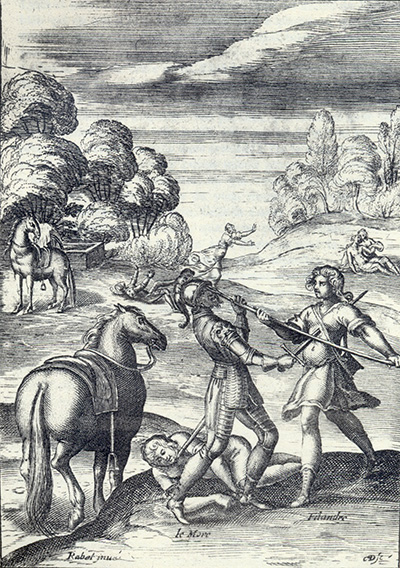
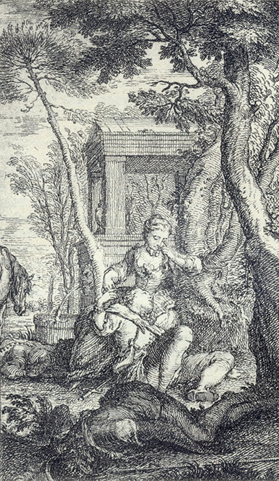

L'Astrée
d'Honoré d'Urfé
Première partie
Livre 6

Gravure signée Rabel
Filandre et le More (le Chevalier barbare) se battent. Filidas est par terre, le bras coupé
(I, 6, 190 recto)
Au fond Diane s'enfuit alors que le Chevalier est désarçonné (I, 6, 189 recto)
Un couple qui pourrait être Filidas et Filandre (I, 6, 189 recto)
L'AstréeI, 6. Édition Vaganay**, 1925Gravure signée Rabel
Filandre et le More (le Chevalier barbare) se battent. Filidas est par terre, le bras coupé
(I, 6, 190 recto)
Au fond Diane s'enfuit alors que le Chevalier est désarçonné (I, 6, 189 recto)
Un couple qui pourrait être Filidas et Filandre (I, 6, 189 recto)
(Voir Illustrations)

Filandre meurt près de Diane. On devine deux cadavres au moins (I, 6, 190 verso)
L'AstréeI, 6. Édition Vaganay**, 1925Filandre meurt près de Diane. On devine deux cadavres au moins (I, 6, 190 verso)
(Voir Illustrations)
Édition de 1607, 257 recto (sic pour 157 recto).
Édition de Vaganay, p. 195.
Histoire
de Diane
Ce serait chose étrange, si le discours que vous
désirez savoir de moi ne vous était ennuyeux,
puis, belles et discrètes Bergères,
Villanelle d'Amidor
reprochant
une légèreté
À la fin celui l'aura
Qui dernier la servira.
De ce cœur cent fois volage,
Plus que le vent animé,
De celui qui fut premier,
Soudain usurpe la place.
C'est pourquoi celui l'aura,
Qui dernier la servira.
Madrigal de Daphnis sur l'amitié
qu'elle portait à Diane
Que si l'amour le plus parfait,
Comme on dit, de semblance naît,
Le nôtre sera bien extrême,
Puisque de vous et moi ce n'est
Qu'un sexe même.
Madrigal sur le même sujet
Pourquoi semble-t-il tant étrange
Que fille comme vous étant
Toutefois je vous aime tant ?
Si l'Amant en l'aimé se change
η,
Ne puis-je pas mieux me changer,
Étant Bergère en vous Bergère,
Qu'étant Bergère en un Berger ?
Stances
de Filandre
sur la naissance de
son affection
Que ses désirs soient grands, et ses attentes vaines,
Ses Amours pleins de feux et plus encore de peines,
Qu'il aime, et que jamais il ne puisse être aimé,
se baissant lentement, m'apporta la lettre toute mouillée de larmes qui trouvaient passage sous sa paupière mal close. Cette vue me toucha de pitié, mais beaucoup plus sa lettre, qui était telle :
Quoique Filandre eût dit ces paroles assez
Livre 5
Livre 7
Référence électronique :
document.write('"'+document.title.substr(0, document.title.indexOf("-")-1)+'". '+"Dernière mise à jour : "+ExtractDate(document.lastModified)+".")Deux visages de L'Astrée.
©2005-2020 E. Henein.
URL :
var today = new Date();
document.write(document.URL +
"<br>Consulté le : " + today.toLocaleDateString("fr-FR") + ".");
var _gaq = _gaq || [];
_gaq.push(['_setAccount', 'UA-19288475-1']);
_gaq.push(['_trackPageview']);
(function() {
var ga = document.createElement('script'); ga.type = 'text/javascript'; ga.async = true;
ga.src = ('https:' == document.location.protocol ? 'https://ssl' : 'http://www') + '.google-analytics.com/ga.js';
var s = document.getElementsByTagName('script')[0]; s.parentNode.insertBefore(ga, s);
})();
Deux visages de L'Astrée.
©2005-2019 Eglal Henein. Creative Commons 4
Édition critique de la première partie de L'Astrée (1607, 1621)
mise en ligne le 9 avril 2007
Édition critique de la deuxième partie de L'Astrée (1610, 1621)
mise en ligne le 10 octobre 2010
Édition critique de la troisième partie de L'Astrée (1619, 1621)
mise en ligne le 1er novembre 2014
Édition critique de la quatrième partie de L'Astrée (1624)
mise en ligne le 15 janvier 2019
document.write("Dernière mise à jour : "+ExtractDate(document.lastModified))